The choice of visualization or graphics depends on the specific insights you want to communicate to your target audience. It is essential to ensure that the chosen visualization or graphics effectively represents your data and is easily understandable to your audience. The following chart summarizes how the data can be visualized on different situations.
The selection of suitable charts also depends on the type of the variables. The choice of charts for different variable types are as follows:
Nominal Data:
For nominal variables like Gender,ethnicity, province, etc, following charts can be of choice:
Bar chart
Pie chart
Tree map
Ordinal Data:
For ordinal variables consiting of categories with a meaningful order but without a consistent interval like education levels (High School, College, Graduate), Likert scale, following charts can be of choice.
Bar chart
Dot plot
Ordered bar chart
Interval Data:
For numeric variables like Temperature (in Celsius or Fahrenheit), IQ scores, following charts can be of choice.
Line chart
Histogram
Box plot
Ratio Data:
For ratio scale variables like Height, Weight, Income etx, following charts can be of choice.
Scatter plot
Histogram
Box plot
Time Series Data:
For data points collected over time, following charts can be of choice.
Line chart
Area chart
Candlestick chart
Hierarchical Data:
For data with a nested structure, following charts can be of choice.
Treemap
Sunburst chart
Nesting in a bar or column chart
Correlation and Relationships:
To show relationships between two or more variables, we can select following charts.
Scatter plot
Bubble chart
Heatmap
Distribution:
To visualizing the spread of data, we can use following charts.
Histogram
Box plot
Kernel density plot
Geospatial Data:
To visualize data associated with geographical locations, following charts can be used.
Map
Choropleth map
Cartogram
Comparison:
To visualize comparison of values across different categories, we can use followinf charts.
Bar chart
Grouped bar chart
Stacked bar chart
Graphics with ggplot
ggplot(), a function from ggplot2 package, allows us to plot simple to complex plots. Every ggplot2 plot have three important components
Dataset in correct format
A set of aesthetic mapping between variables in the data and visual properties: x-axis, y-axis, color, fill color, shape, and size are the aesthetic attributes
At least one layer that describes how to render each observation
geom_area() draws an area plot, which is a line plot filled to the y-axis (filled lines). Multiple groups will be stacked on top of each other.
geom_boxplot() draws box plot
geom_bar(stat = "identity") makes a bar chart. We need stat = "identity" because the default stat automatically counts values . The identity stat leaves the data unchanged. Multiple bars in the same location will be stacked on top of one another.
geom_line() makes a line plot. The group aesthetic determines which observations are connected; connects points from left to right; geom_path() is similar but connects points in the order they appear in the data. Both geom_line() and geom_path() also understand the aesthetic linetype, which maps a categorical variable to solid, dotted and dashed lines.
geom_point() produces a scatterplot. geom_point() also understands the shape aesthetic.
geom_polygon() draws polygons, which are filled paths. Each vertex of the polygon requires a separate row in the data. It is often useful to merge a data frame of polygon coordinates with the data just prior to plotting.
geom_text() adds text to a plot. It requires a label aesthetic that provides the text to display, and has a number of parameters (angle, family, fontface, hjust and vjust) that control the appearance of the text.
#simple box plot of age by sexggplot(data = data,aes(x = Sex, y=Age))+geom_boxplot()
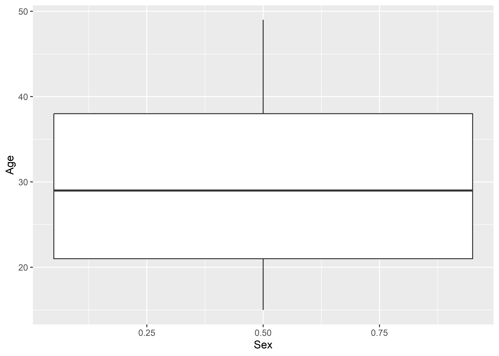
# here data is the dataset, x and y axis include sex and age respectively and layer include box plot# lets add some other asthetics and see changes#fill: it will create age distribution of population by sex and ethnicity (change the fill color)ggplot(data = data,aes(x = Sex, y=Age, fill=Ethnicity))+geom_boxplot()
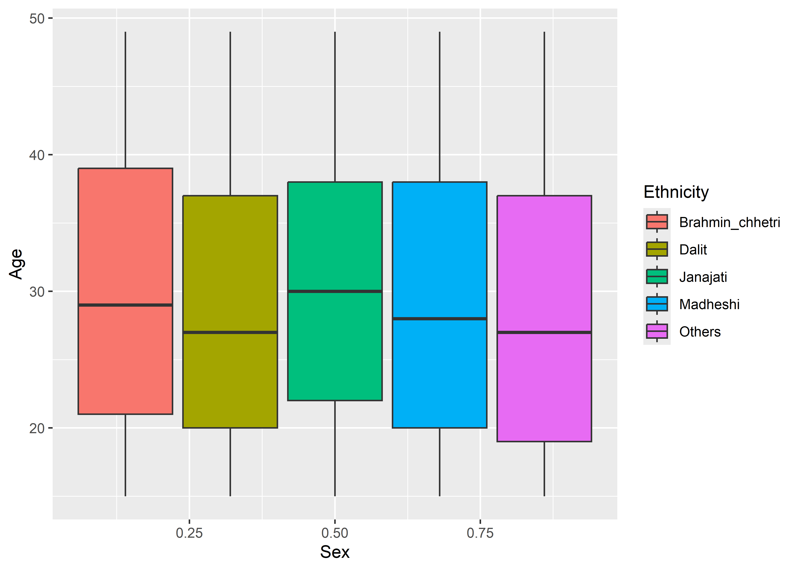
# see difference here when you add specific color to fill and col attributeggplot(data = data,aes(x = Sex, y=Age, fill="red"))+geom_boxplot()
# add title and change axis titleggplot(data = data,aes(x = Sex, y=Age, fill=Ethnicity))+geom_boxplot()+xlab("Gender")+ylab("Age (in years)")+labs(title ="Sex and ethnicity-wise distribution of Age",subtitle ="Caption here",tag ="A")
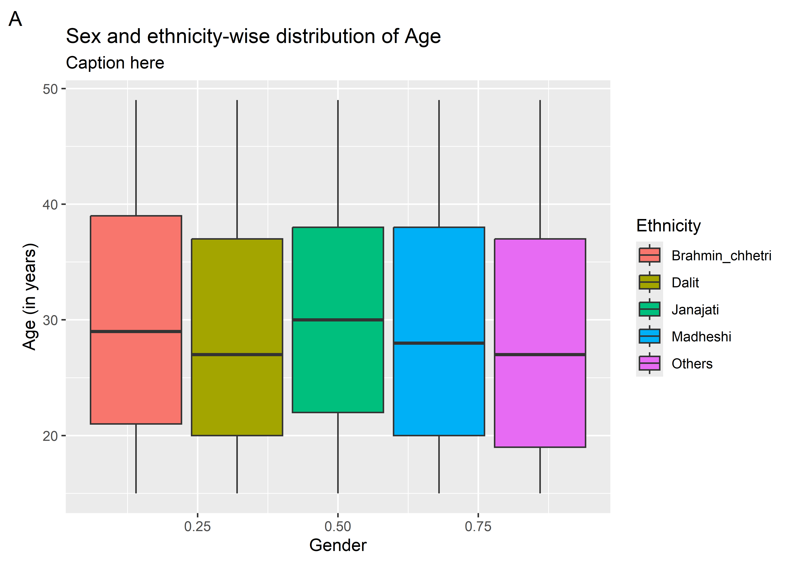
Manual color to the chart (fill and line color)
# change fill color by variableggplot(data = data,aes(x = Sex, y=Age, fill=Ethnicity))+geom_boxplot()+scale_fill_manual(values=c("lightpink","lightblue","lightyellow", "lightgreen","navy"))+xlab("Gender")+ylab("Age (in years)")+labs(title ="Sex and ethnicity-wise distribution of Age",subtitle ="Caption here",tag ="A")
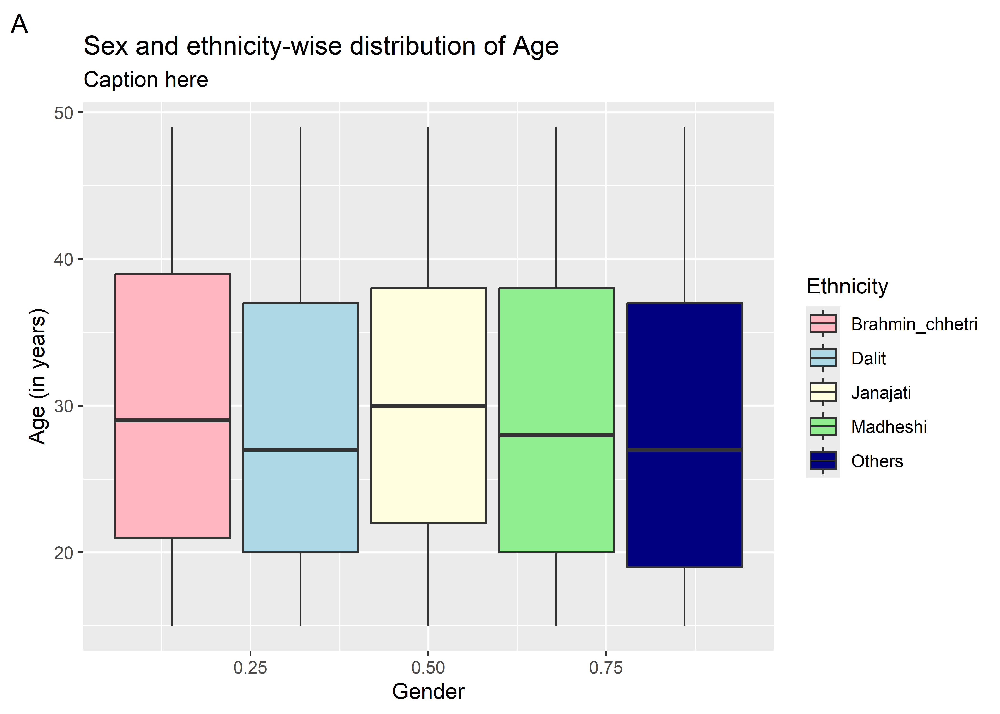
# change line color by variableggplot(data = data,aes(x = Sex, y=Age, col=Ethnicity))+geom_boxplot()+scale_color_manual(values=c("lightpink","lightblue","lightyellow", "lightgreen","navy"))+xlab("Gender")+ylab("Age (in years)")+xlab("Gender") +ylab("Age (in years)") +labs(title ="Sex and ethnicity-wise distribution of Age",subtitle ="Caption here",tag ="A")
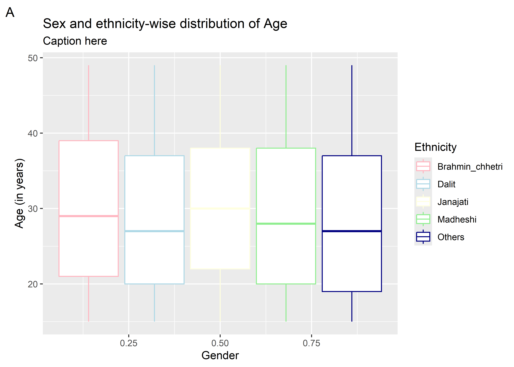
Faceting
Faceting creates tables of graphics by splitting the data into subsets and displaying the same graph for each subset. There are two types of faceting- grid and wrap
The theming system is composed of four main components:
Theme elements specify the non-data elements that you can control.
General Appearance:
panel.background: Background color of the plotting area.
plot.background: Background color of the entire plot.
plot.title: Text appearance for the plot title.
plot.subtitle: Text appearance for the plot subtitle.
Axis Labels and Title:
axis.title.x and axis.title.y: Text appearance for the x and y-axis titles.
axis.text.x and axis.text.y: Text appearance for tick labels on the x and y-axes.
axis.title: Text appearance for both x and y-axis titles simultaneously.
Axis Lines and Ticks:
axis.line: Line appearance for axis lines.
axis.ticks: Line appearance for axis ticks.
axis.text: Text appearance for axis tick labels.
Grid Lines:
panel.grid.major and panel.grid.minor: Line appearance for major and minor grid lines.
Legend:
legend.background: Background color of the legend.
legend.title: Text appearance for the legend title.
legend.text: Text appearance for legend labels.
Margins and Spacing:
plot.margin: Margins around the entire plot.
panel.spacing: Spacing between panels if there are multiple facets.
Facet Labels:
strip.text: Text appearance for facet labels.
strip.background: Background color of the facet labels.
Each theme element is associated with an element function, which describes the visual properties of the element.
Background Elements:
element_blank(): Removes the element (e.g., removes the background or border).
element_rect(): Customizes the appearance of rectangular elements.
Text Elements:
element_text(): Customizes the appearance of text elements.
Line Elements:
element_line(): Customizes the appearance of line elements.
Arrow Elements:
element_arrow(): Customizes the appearance of arrow elements.
Title Elements:
element_title(): Customizes the appearance of title elements.
Line Breaks and Wrapping:
element_markdown(): Allows using Markdown syntax for text elements.
Spacing Elements:
element_spacing(): Customizes the spacing between various elements.
Miscellaneous Elements:
element_grob(): Allows direct insertion of graphical objects.
element_render() and element_render_args(): Used for rendering custom elements.
The theme() function which allows you to override the default theme elements by calling element functions, like theme(plot.title = element_text(colour = "red")).
Completethemes
theme_minimal(): A minimalistic theme.
theme_light(): A light-colored theme.
theme_dark(): A dark-colored theme.
theme_classic(): A classic, gray-scale theme.
ggplot(data = data,aes(x = Sex, y=Age, fill=Ethnicity))+geom_boxplot()+xlab("Gender")+ylab("Age (in years)")+labs(title ="Sex and ethnicity-wise distribution of Age",subtitle ="Caption here",tag ="A")+facet_wrap(facets =~Ethnicity,nrow =3, scales ="free_x")+# scales ("free", "free_x", "free_y")theme(panel.background=element_rect(fill="lightgreen"),panel.grid =element_blank(),plot.title =element_text(face="bold",color ="red", size =13),axis.title =element_text(face="bold", color="blue"),legend.title =element_text(face="bold", color="pink"),legend.position ="bottom",axis.text=element_text(colour ="darkgreen"),axis.line=element_line(color="blue", linewidth =1) )
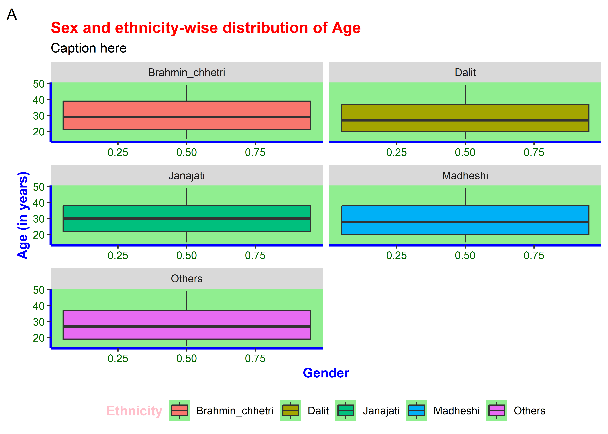
Example 1: Bar plot with CI
Lets create bar diagram from another dataset
# load datasetdt<-readRDS("Datasets/For graphics1.RDS")# Prepare the aggregated pivot tablea<-dt |>group_by(Province, Four_ANC) |>tally() |>mutate(total =sum(n),percent=n/total*100) |>filter(Four_ANC=="Yes")# plot bar diagramggplot(data=a)+geom_bar(aes(x=Province, y=percent), stat ="identity")
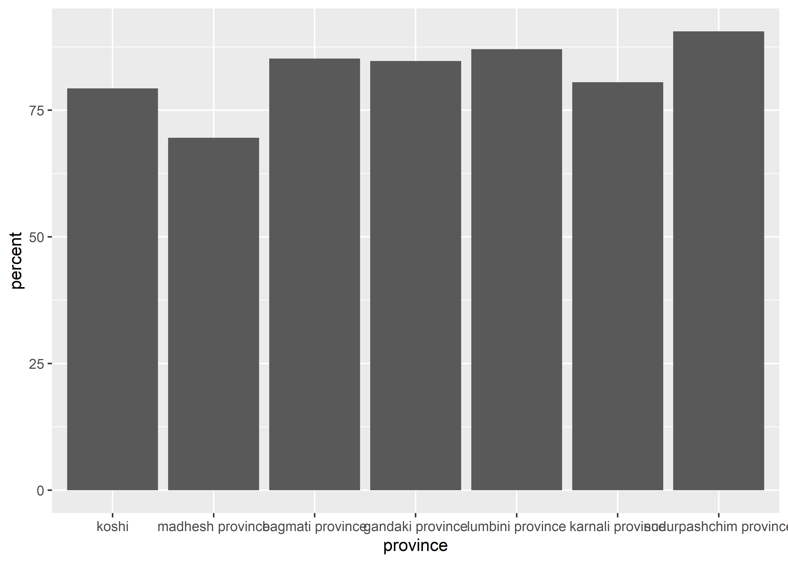
# lets add vaule label to the barplot# Prepare the aggregated pivot tablea<-dt |>group_by(Location,Province, Four_ANC) |>tally() |>ungroup() |>group_by(Location,Province) |>mutate(total =sum(n),percent=n/total*100,ci=DescTools::BinomCI(n,total,method="clopper-pearson")*100) |>filter(Four_ANC=="Yes")# Generate bar_plotggplot(data=a)+geom_bar(aes(x=Location, y=percent), stat ="identity")
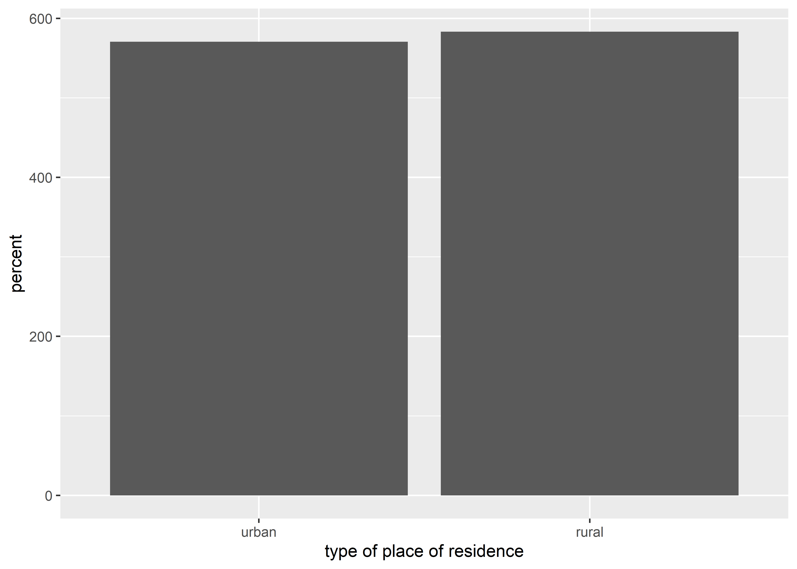
# what is wrong with this ????# We have calculated percent for location under provicne too which is to be facetedggplot(data=a)+geom_bar(aes(x=Location, y=percent), stat ="identity")+facet_wrap(~Province, nrow =1)
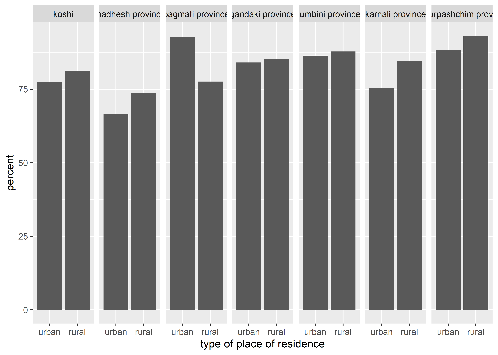
# Now lets add CI to the barggplot(data=a)+geom_bar(aes(x=Location, y=percent), stat ="identity")+geom_errorbar(aes(x=Location, y=percent,ymin = a$ci[,2], ymax = a$ci[,3]), alpha =1, size=1, width=0.3)+facet_wrap(~Province, nrow =1)
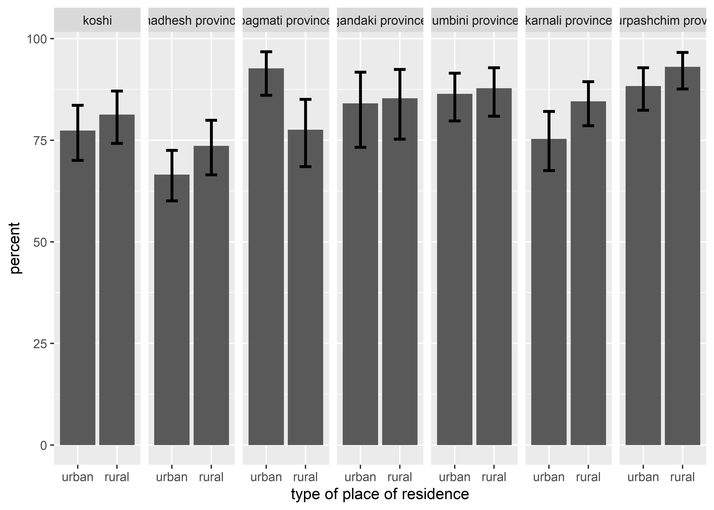
#Now lets add value label the chartggplot(data=a)+geom_bar(aes(x=Location, y=percent,fill=Location),col="black", stat ="identity", alpha=1)+geom_errorbar(aes(x=Location, y=percent,ymin = a$ci[,2], ymax = a$ci[,3]), alpha =1, size=1, width=0.3)+facet_wrap(~Province, nrow =1)+geom_text(aes(x=Location, y=percent, label=sprintf("%0.2f",percent)), size=4, vjust=1.5,hjust=-0.1, angle=90, col="blue")+scale_fill_manual(values=c("pink","lightgreen"))+xlab("Location")+ylab("Percent (%) with CI")+labs(title ="Distribution of 4+ANC by Location and Provice")+theme(panel.background=element_blank(),panel.grid =element_blank(),plot.title =element_text(face="bold",color ="black", size =13),axis.title =element_text(face="bold", color="black"),legend.title =element_text(face="bold", color="black"),legend.position ="bottom",axis.text=element_text(colour ="darkgreen"),axis.line=element_line(color="black", linewidth =1) )
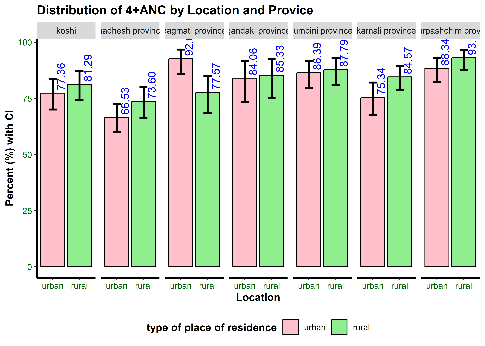
Example 2: plot of chart from global burden of disease
#> # A tibble: 10 × 8
#> Ovearll_class Class estimate_type Sex Age prop lci uci
#> <chr> <chr> <chr> <chr> <chr> <dbl> <dbl> <dbl>
#> 1 DM_P DM P Both sex <1 0 0 0
#> 2 DM_P DM P Both sex 1-4 11.5 5.52 19.2
#> 3 DM_P DM P Both sex 5-9 57.9 30.6 93.8
#> 4 DM_P DM P Both sex 10-14 125. 77.4 183.
#> 5 DM_P DM P Both sex 15-19 763. 572. 1000.
#> 6 DM_P DM P Both sex 20-24 1391. 1101. 1765.
#> 7 DM_P DM P Both sex 25-29 2275. 1825. 2831.
#> 8 DM_P DM P Both sex 30-34 3451. 2846. 4179.
#> 9 DM_P DM P Both sex 35-39 4929. 4120. 5802.
#> 10 DM_P DM P Both sex 40-44 6782. 5718. 7965.